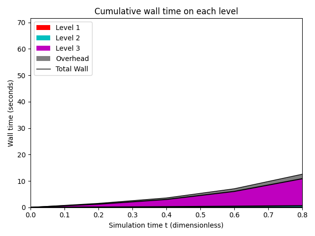
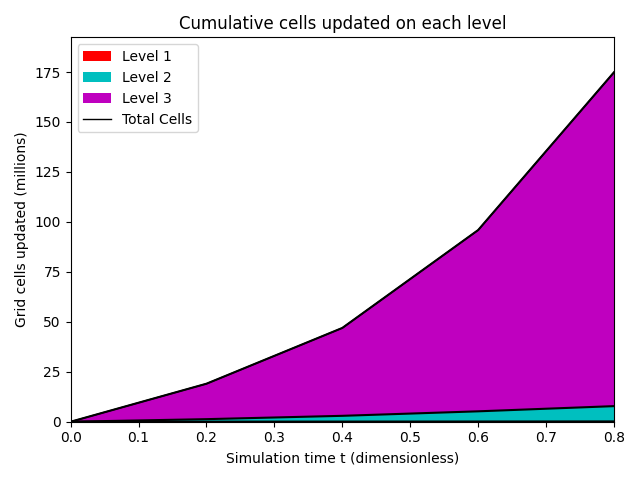
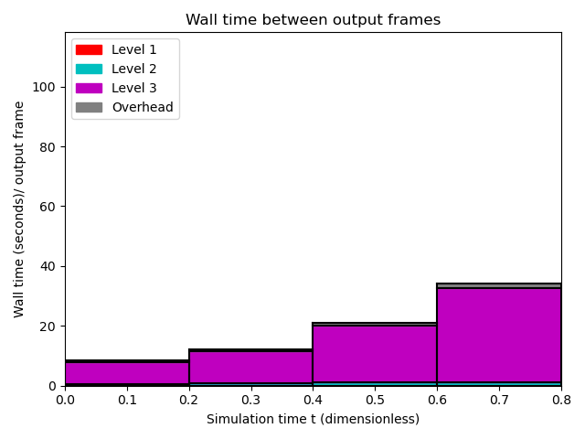
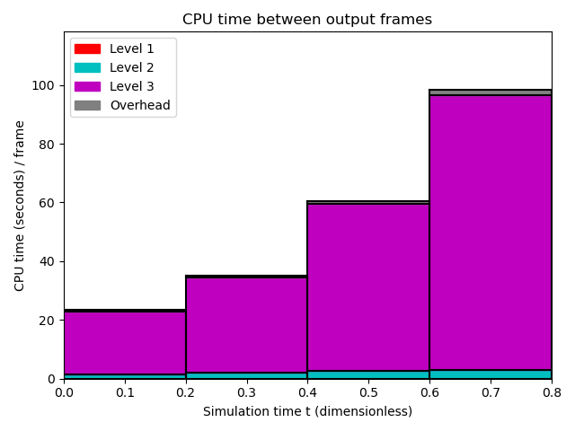
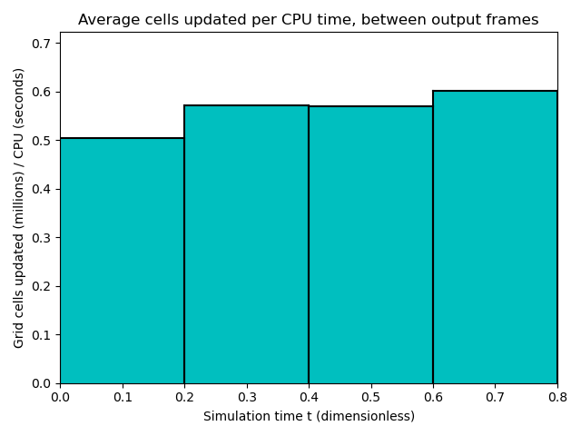

Datetime: 2020-04-17 14:13 From: /Users/rjl/clawpack_src/clawpack_master/amrclaw/examples/euler_2d_quadrants/_output
============================== Timing Data ==============================
Integration Time (stepgrid + BC + overhead)
Level Wall Time (seconds) CPU Time (seconds) Total Cell Updates
1 0.180 0.182 0.152E+06
2 3.350 9.211 0.765E+07
3 68.464 203.798 0.167E+09
total 71.994 213.191 0.175E+09
All levels:
stepgrid 71.353 211.505
BC/ghost cells 0.592 1.632
Regridding 0.444 0.919
Output (valout) 3.145 3.106
Total time: 75.850 217.687
Using 3 thread(s)
Note: The CPU times are summed over all threads.
Total time includes more than the subroutines listed above
Note: timings are also recorded for each output step
in the file timing.csv.
clock_rate = 1000000000 per second, count_max = 9223372036854775807
clock_start = 1587157909205838000, clock_finish = 1587157985063180000
=========================================================================
 


